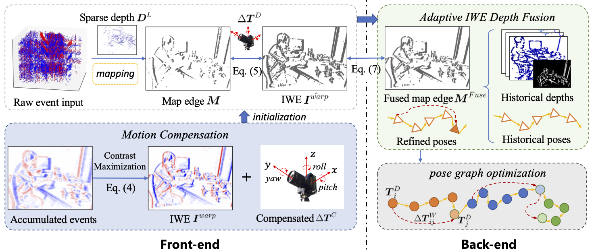

|
GRE-SLAM: 6-DoF Pure Event-Based SLAM with Semi-Dense Depth Recovery Assisted Bundle Adjustment Yang Chen1, Lin Zhang1 1School of Software Engineering, Tongji University, Shanghai, China
|
Introduction
This is the website for our paper " GRE-SLAM: 6-DoF Pure Event-Based SLAM with Semi-Dense Depth Recovery Assisted Bundle Adjustment ". We propose first 6-DoF pure event-based SLAM system equipped with back-end global optimization, named GRE-SLAM (Globally Refined Event-based SLAM). For robustness and accuracy, we innovate both the front-end and the back-end of this system. First, motion compensation and the direct method are combined in the front-end to better align the event data, providing a robust pose estimation for global optimization. Second, in the back-end, an adaptive semi-dense depth recovery module is introduced to make full utilization of all historical maps and poses respectively to support effective BA. Comprehensive experiments on real-world datasets demonstrate that our method can produce high-accuracy pose estimation results as well as recover a semi-dense depth map for each Image of Warped Events (IWE).
Framework Overview

Source Codes
Note: all these codes related to GRE-SLAM are implemented by C++, ROS-Melodic (Ubuntu18.04) and we run them on a desktop with a CPU model of AMD Ryzen 9 5900X 12-Core Processor.
Demo Videos
The following is a demo video demonstrating the performance of our GRE-SLAM in pose estimation and mapping.
Last update: Sep. 11, 2024